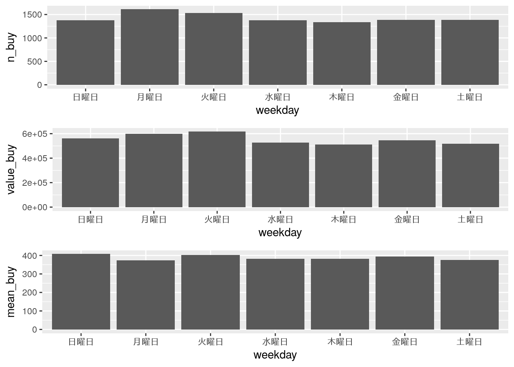
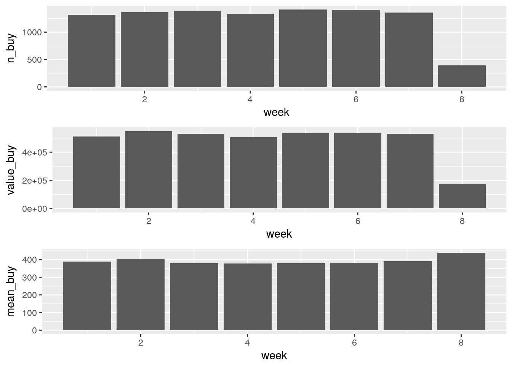
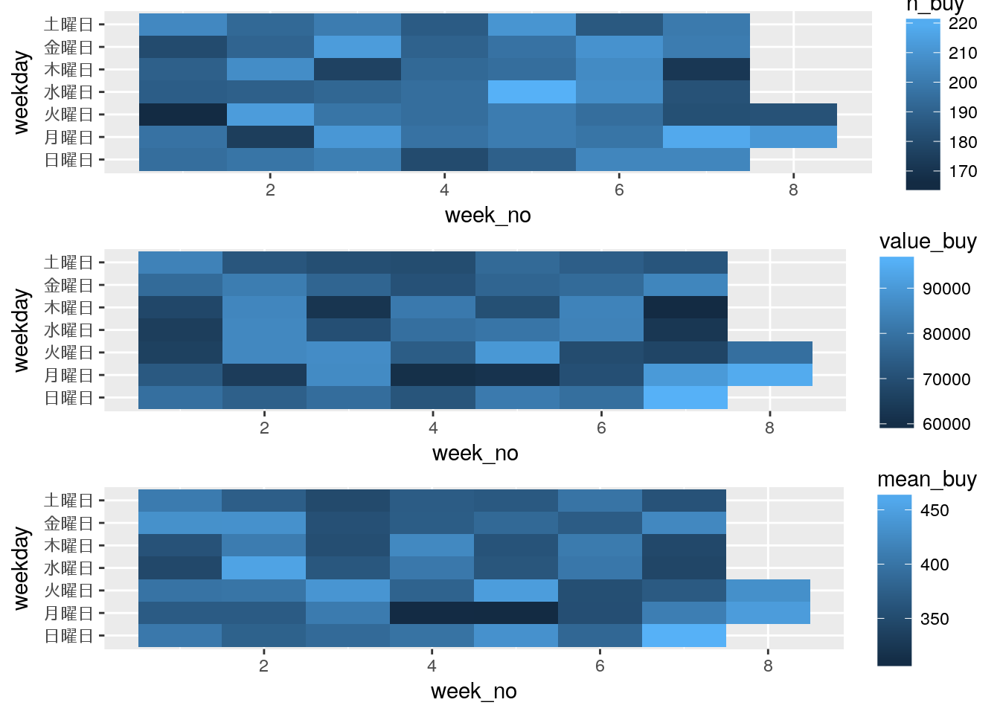

lesson: 4 曜日別・週別集計
ここでは、lesson2で準備したdf_logという仮想ログデータを用いて、曜日別集計と週別集計を算出してまとめることを目指します。さらに、それらを掛けあわせたデータセットと可視化を行います。その中でlubridateによる日時データからの特定の要素(週、曜日など)取り出し解説します。
4.1 想定シナリオ
lesson2で作成したアイテム購入ログデータを元に曜日別集計を行います:
- 曜日別購入件数
- 曜日別売上合計
- 曜日別購入単価平均
この集計により、どの曜日に売上が多かったかなどを検証することができます。
また、同様に週間集計を行います:
- 週間別購入件数
- 週間別売上合計
- 週間別購入単価平均
この集計により、どの週で売上が多かったかなどを検証することができます。
4.2 処理の実行
4.2.1 パッケージ読み込み
ここで使用するパッケージを読み込みます:
library(tidyverse)
library(lubridate)
library(gridExtra)4.2.2 データ読み込み
lesson2で作成したcsvを読み込みます。readr::read_csv()を使います:
df_log <- readr::read_csv("df_log.csv")
#> Parsed with column specification:
#> cols(
#> stamp = col_datetime(format = ""),
#> id = col_integer(),
#> item = col_character(),
#> value = col_double()
#> )4.2.3 データハンドリングと可視化
4.2.3.1 曜日別
それぞれの曜日でどれだけ売上があったかを集計してデータセットにします。基本的な流れは以下のとおりです:
- 日時のタイムスタンプから曜日を取得して変数(weekday)を作成
- weekdayごとに処理するようにグループ化
- 各種集計を実施
実際のRのコードは以下のようになります:
df_log_wday <- df_log %>%
# 曜日を取得して変数を追加
mutate(weekday = wday(stamp, label = TRUE, abbr = FALSE)) %>%
group_by(weekday) %>%
summarise(
n_buy = n(),
value_buy = sum(value),
mean_buy = mean(value)
)この処理を行ったデータセットは以下のようになります:
knitr::kable(df_log_wday)| weekday | n_buy | value_buy | mean_buy |
|---|---|---|---|
| 日曜日 | 1374 | 560200 | 407.7147 |
| 月曜日 | 1610 | 600300 | 372.8571 |
| 火曜日 | 1533 | 616300 | 402.0222 |
| 水曜日 | 1377 | 526500 | 382.3529 |
| 木曜日 | 1339 | 510200 | 381.0306 |
| 金曜日 | 1383 | 546000 | 394.7939 |
| 土曜日 | 1384 | 518500 | 374.6387 |
このデータを元にggplot2で可視化してみます:
p_wday <- ggplot(df_log_wday)
p_wday1 <- p_wday +
geom_bar(aes(x = weekday, y = n_buy), stat = "identity")
p_wday2 <- p_wday +
geom_bar(aes(x = weekday, y = value_buy), stat = "identity")
p_wday3 <- p_wday +
geom_bar(aes(x = weekday, y = mean_buy), stat = "identity")
grid.arrange(p_wday1, p_wday2, p_wday3)
4.2.3.2 週間
それぞれの週でどれだけ売上があったかを集計してデータセットにします。基本的な流れは以下のとおりです:
- 日時のタイムスタンプから週番号を取り出した変数(week)を作成
- weekごとに処理するようにグループ化
- 各種集計を実施
実際のRのコードは以下のようになります:
df_log_week <- df_log %>%
# タイムスタンプから週番号を取得
mutate(week = week(stamp)) %>%
group_by(week) %>%
summarise(
n_buy = n(),
value_buy = sum(value),
mean_buy = mean(value)
)この処理を行ったデータセットは以下のようになります:
knitr::kable(df_log_week)| week | n_buy | value_buy | mean_buy |
|---|---|---|---|
| 1 | 1320 | 511800 | 387.7273 |
| 2 | 1367 | 549900 | 402.2677 |
| 3 | 1395 | 529600 | 379.6416 |
| 4 | 1337 | 506600 | 378.9080 |
| 5 | 1416 | 537300 | 379.4492 |
| 6 | 1409 | 538000 | 381.8311 |
| 7 | 1361 | 531500 | 390.5217 |
| 8 | 395 | 173300 | 438.7342 |
このデータを元にggplot2で可視化してみます:
p_week <- ggplot(df_log_week)
p_week1 <- p_week +
geom_bar(aes(x = week, y = n_buy), stat = "identity")
p_week2 <- p_week +
geom_bar(aes(x = week, y = value_buy), stat = "identity")
p_week3 <- p_week +
geom_bar(aes(x = week, y = mean_buy), stat = "identity")
grid.arrange(p_week1, p_week2, p_week3)
4.2.3.3 曜日x週
ついでに、曜日x週で集計するようにやってみます。両方の変数をgroup_by()で両方を指定すればOKです;
df_log_weekday_no <- df_log %>%
# 変数を準備
mutate(weekday = wday(stamp, label = TRUE, abbr = FALSE),
week_no = week(stamp)) %>%
# グループ化
group_by(week_no, weekday) %>%
summarise(
n_buy = n(),
value_buy = sum(value),
mean_buy = mean(value)
)この処理を行ったデータセットは以下のようになります:
knitr::kable(head(df_log_weekday_no))| week_no | weekday | n_buy | value_buy | mean_buy |
|---|---|---|---|---|
| 1 | 日曜日 | 195 | 78900 | 404.6154 |
| 1 | 月曜日 | 197 | 72800 | 369.5431 |
| 1 | 火曜日 | 165 | 65700 | 398.1818 |
| 1 | 水曜日 | 188 | 64900 | 345.2128 |
| 1 | 木曜日 | 189 | 67700 | 358.2011 |
| 1 | 金曜日 | 180 | 77800 | 432.2222 |
このデータを元にggplot2で可視化してみます:
# 曜日と週番号で可視化
p_weekday_no <- ggplot(df_log_weekday_no)
p_weekday_no1 <- p_weekday_no +
geom_tile(aes(x = week_no, y = weekday, fill = n_buy))
p_weekday_no2 <- p_weekday_no +
geom_tile(aes(x = week_no, y = weekday, fill = value_buy))
p_weekday_no3 <- p_weekday_no +
geom_tile(aes(x = week_no, y = weekday, fill = mean_buy))
grid.arrange(p_weekday_no1, p_weekday_no2, p_weekday_no3)
4.2.4 解説
今回のポイントは、日時データから週番号および曜日を取得するところです。
週番号を取得するには、week()を利用します:
x <- ymd_hms("2018-02-24 15:30:20")
# 週番号を取得
week(x)
#> [1] 8
# ついでにquaterも
quarter(x)
#> [1] 1
# さらにsemesterも
semester(x)
#> [1] 1このあたりはlesson3と同様です。セメスターもクウォーターも切り出せます。開始時期も引数で指定できます。
曜日を取得するには、wday()を利用します:
# 曜日を数値で取得
wday(x)
#> [1] 7
# 曜日を文字列(ラベル)で取得
wday(x, label = TRUE)
#> [1] 土
#> Levels: 日 < 月 < 火 < 水 < 木 < 金 < 土
# 曜日を順序付きfactor型で非省略
wday(x, label = TRUE, abbr = FALSE)
#> [1] 土曜日
#> 7 Levels: 日曜日 < 月曜日 < 火曜日 < 水曜日 < 木曜日 < ... < 土曜日
# 曜日を月曜からスタートさせる
wday(x, label = TRUE, abbr = FALSE,
week_start = 1)
#> [1] 土曜日
#> 7 Levels: 月曜日 < 火曜日 < 水曜日 < 木曜日 < 金曜日 < ... < 日曜日セットしているlocaleにあわせて表示されます。自動的にやってくれるので便利です。
4.3 参照
- Get/set weeks component of a date-time
週番号を取得する関数の説明
- Get/set days component of a date-time
曜日を取得する関数
wday()などの説明